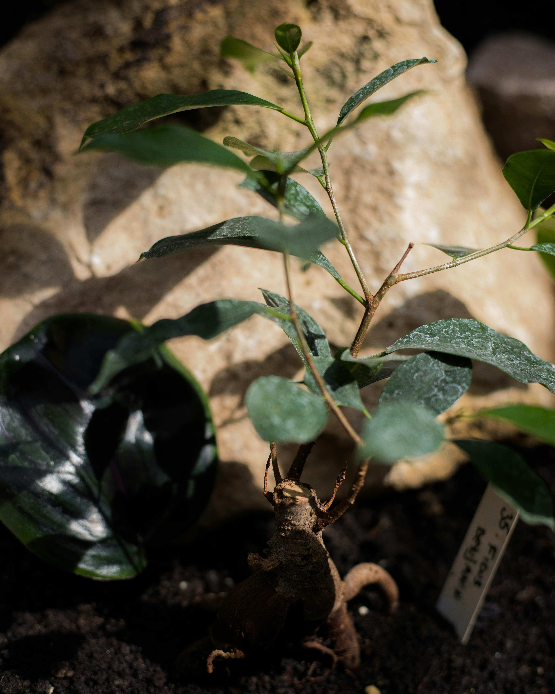

Background Information
A World Without Food Insecurity focuses on achiving "Zero Hunger" by spreading awareness and promoting sustainable food systems.
We aim to encourage individuals,communities and institutions to take steps that ensure that every one has access to nutritious food.
Our approach focuses on empowering communities through agricultural development,education and innovation
We work with local farmers, youth and community leaders to make all this happen.
Our Vision
A World where everyone has access to nutricious food at all times and no one suffers from hunger or malnutrition
Our Mission
To encourage growth and sustainability together through education, advocacy and action
Objectives
- Promote awareness about food insecurity. This reduces food waste
- Encourage sustainable farming and food use
- Surporting communities with tools, training and resources which help them achieve self-sustainance
- Extending a helping hand to desparate people in crisis
- Encourage youth participation in food security initiatives
- Support local farmers with tools, knowledge and resources
Our Services
We offer a range of services focused on improving the lives of peoplein need through volunteer activities, agricultural education and food supply.
We provide training, resources and direct support to help families achieve food security
Our team collaborates with organisations worldwide to strengthen local food systems and fight poverty.
Among others
What We Do To Combat Food Insecurity

We support better food distribution systems to camps and homeless shelters to ensure every individual has access to nutricious meals

Partnerships with organisations and governments help with adequate supplies for families and communities, this reduces hunger and connects farmers to stable markets

Promoting growth of healthy gardens to boost food availability and provide income for farmers

Encouraging sustainable farming using organic fertilizers and better modern tchniques

Disributing quality seedlings to small scale farmers to improve crop yields and diversity

Surpporting growth of staple food warrants food security for many families and available market for the surplus

Empowering local desparate farmers with knowledge and tools for better farming methods increases productivity and reduces hunger as well as land pollution